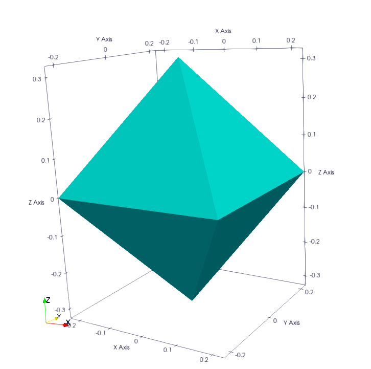
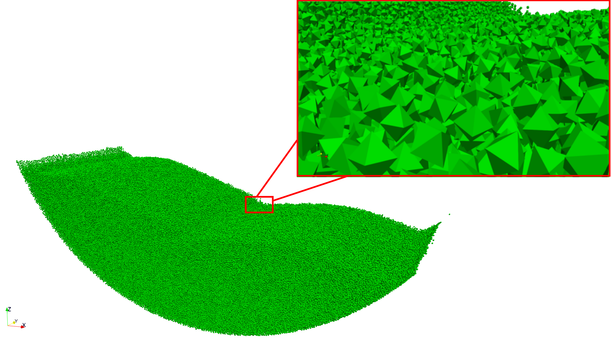
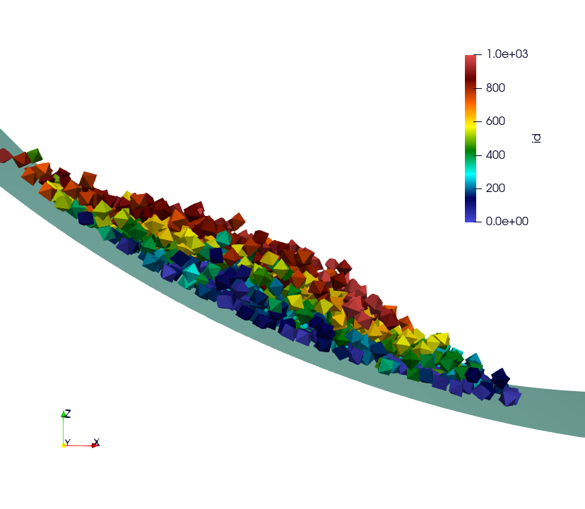
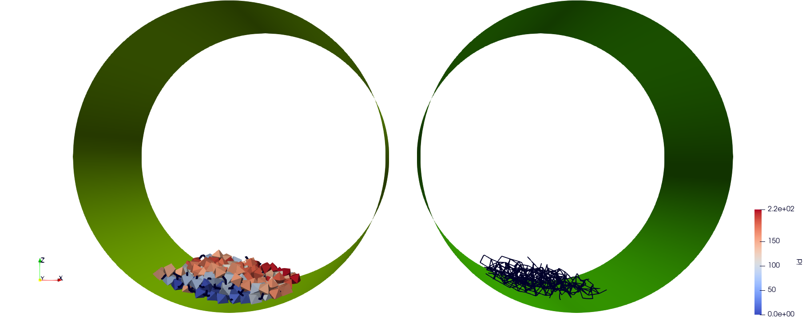

10. I/O and Analysis
In this section, we will describe the various operators used for analysis and I/O in DEM simulations.
10.1. Reader Operators
10.1.1. Reader Of xyz File
Name: read_xyz
Description: This operator reads a file written according to the xyz format.
- Parameters:
bounds_mode : default mode corresponde to ReadBoundsSelectionMode.
enlarge_bounds : Define a layer around the volume size in the xyz file. Default size is 0.
file : File name, this parameter is required.
pbc_adjust_xform : Ajust the form.
YAML example:
- read_xyz:
file: input_file_rigid_surface.xyz
bounds_mode: FILE
enlarge_bounds: 1.0 m
How to build your xyz input file of nb particles.
nb
box_size_x box_size_y box_size_z
type_0 pos_x_0 pos_y_0 pos_z_0
type_1 pos_x_1 pos_y_1 pos_z_1
type_2 pos_x_2 pos_y_2 pos_z_2
...
type_nb-1 pos_x_nb-1 pos_y_nb-1 pos_z_nb-1
This is an example of two particles the same type in a domain [[0,0,0],[10,10,10]].
2
10 10 10
0 2.5 5.0 5.0
0 7.5 5.0 5.0
10.1.2. Reader Of MPIIO File
Name: read_dump_particles
Description: This operator readz a dump file with all particles information required to restart the simulation. See operator : @write_dump_particles
- Parameters:
enable_friction : Enable to write friction information. By default this option is activated.
filename : Dump file name to read.
bounds : If set, override domain’s bounds, filtering out particle outside of overriden bounds (AABB = [[infx, infy, infz],[supx, supy, supz]]).
expandable : If set, override domain expandability stored in file
periodicity : If set, overrides domain’s periodicity stored in file with this value (ex: [false,true,false]).
scale_cell_size : If set, this opetion rescale cell size. Due to friction storage per cell, ou can only multiply this size by an integer (1,2,4, 8, …) or divide it by a power of 1/(2^n) (0.5,0.25 …).
shrink_to_fit : If set to true and bounds was wpecified, try to reduce domain’s grid size to the minimum size enclosing fixed bounds.
YAML example:
- read_dump_particles:
filename: last.dump
Note
This operator is used for spheres and not polyhedra because we need a special reader to read current interactions values containing the friction and moment. Show read_dump_particle_interaction.
10.2. Writer Operators
10.2.1. Writer Of MPIIO Files
Name: write_dump_particles
Description: This operator writes a dump file with all particles information required to restart the simulation. See operator : @read_dump_particles.
- Parameters:
compression_level Zlib compression level.
filename Dump output file name.
Default behaviour: the default name is defined by : - timestep_file: “exaDEM_%09d.dump and piloted by simulation_dump_frequency: 1 in the operator global.
Note
This operator is defined in the default ExaDEM operator named dump_data_particles.
10.2.2. Writer Of XYZ Files
Name: write_xyz_generic
Description: This operator writes a txt file (.xyz) with all specified fields.
Parameters: * fields: array of fieldsets. Example:
[ id, velocity, radius ]* filename: name of the output file. * units: array of units. Example:{ velocity: "m/s", radius: "m" }
Note
The first line of the output file contains the number of particles. The second line contains the “lattice” description, useful when using ovito.
YAML example: Replaces MPIIO Output files with xyz files.
dump_data_xyz:
- timestep_file: "dem_pos_vel_%09d.xyz"
- write_xyz_generic:
fields: [ id, velocity, radius ]
units: { velocity: "m/s", radius: "m" }
iteration_dump_writer:
- dump_data_xyz
global:
simulation_dump_frequency: 500
To process these files, a sample script is provided in scripts/post_processing/profile_pos_vel.py. This is a minimal, easily modifiable post-processing file, that calculates the averages of all position and velocity components.
Output file: [mean_r_v.pdf]
{kind=link}
10.3. Polyedra I/O and Analysis
In this section, we will describe the operators related to the usage of polyhedra.
10.3.1. Read Shape File
The purpose of this operator is to add shapes to a collection of shapes. This operator can be called as many times as desired. However, if you add the same shape multiple times, it will create duplicates. Additionally, the shapes will be ordered according to the order of reading, meaning that type 0 will be associated with the first shape from the first input file. Furthermore, this operator will automatically create a polydata for each shape, which will be used for displaying the polyhedra using ParaView.
- read_shape_file :
filename: Input file name, no default name.
Warnings:
Warning
This operator takes on ASCII files.
This operator is not typo-proof and will ignore problematic values.
Do not define a shape “driven” such as a wall or a cylinder because the cell diameters and the cutoff radius for creating interaction lists are derived from the shapes of the polyhedra. These should be defined in specific operators if they have an analytical shape. If they have particular shapes with many facets, please use the STL mesh reader.
YAML example:
- read_shape_file:
filename: shapes.shp
Example of a shape:
<
name Octahedron
radius 0.1
preCompDone y
nv 6
0.2310789034541148 -0.2310789034541148 0.0
0.2310789034541148 0.2310789034541148 0.0
0.0 0.0 0.32679491924311227
-0.2310789034541148 -0.2310789034541148 0.0
-0.2310789034541148 0.2310789034541148 0.0
0.0 0.0 -0.32679491924311227
ne 12
0 1
2 1
2 0
0 3
2 3
3 4
4 2
4 1
5 0
5 1
5 4
5 3
nf 8
3 0 1 2
3 2 3 4
3 1 2 4
3 0 2 3
3 0 5 1
3 0 5 3
3 3 5 4
3 4 5 1
obb.extent 0.33107890345411484 0.33107890345411484 0.4267949192431123
obb.e1 1.0 0.0 0.0
obb.e2 0.0 1.0 0.0
obb.e3 0.0 0.0 1.0
obb.center 0.0 0.0 0.0
position 0.0 0.0 0.0
orientation 1.0 0.0 0.0 0.0
volume 0.16666666666666666
I/m 0.04999999999999999 0.04999999999999999 0.04999999999999999
>
Example of Octahedron.vtk with paraview:
{kind=link}
10.3.2. Dump Paraview For Polyhedra
- In exaDEM, there are two ways to display polyhedra with Paraview:
The first is to directly display the vertices of the polyhedra and the surfaces in parallel VTP (PolyData). However, no fields associated with the polyhedra are available, such as velocity or density.
The second solution is to use the generic Paraview output of exaDEM by adding the orientation field and the homethety field (optional). Then, it’s possible to associate a mesh with each point, such as an octahedron.vtk file generated by read_shape_file, to each point by associating it with a size (field::homothety) and a quaternion (field::orient).
Note
Only the default behavior when the config_polyhedra.msp file is used, is the option 2 that offers more possibilities. In addition, it is important to note that paraview does not include the layer of shape->radius size, i.e. faces are displayed according to the vertex centers.
- Option 1: write_paraview_polyhedra
basedir : Name of the directory where paraview files will be written, by default this directory is named polyhedra_paraview.
basename : Name of paraview file, there is no default name.
YAML example:
- write_paraview_polyhedra:
basename: polyhedra
Example with 850,000 octahedra:
{kind=link}
Note
This operator is rather limited in terms of visualization, so we now advise you to use option 2, which offers more possibilities (field display) and less memory-intensive files.
- Option 2: write_paraview_generic
binary_mode [BOOL] : paraview format file, default is true.
compression [STRING] : level of compression, default is “default” for vtkZLibDataCompressor.
filename [STRING]: basename of the parallel paraview output files, default is “output”.
write_ghost [BOOL]: dump ghost particles, default is false.
write_box [BOOL]: write box information in a box.vtp file, default is true.
write_external_box [BOOL]: write external box (ghost area), default is false.
This operator is based on this function: ParaviewWriteTools::write_particles.
YAML example:
write_paraview_generic:
binary: false
write_ghost: false
fields: ["vx","vy","vz","id","orient"]
How to use it with Paraview:
Firstly, we need to load our reference mesh (Octahedron.vtk) in our case.
Secondly, load your particle file into the Paraview folder (default name in exaDEM for the paraview_generic operator).
Thirdly, choose the 3D Glyphs representation and the coloring.
{kind=link}
Fourthly, in the Glyph Parameters section, choose “Orient” withi the Orientation Mode “Quaternion” and as Orientation Vectors: “orient”. To change the size, you can check Scaling and add the Scale Array you wish. Finally, in the Glyph Type dropdown menu, select “Pipeline Connection” and in Input, choose “Octahedron.vtk”.
{kind=link}
Result for a simulation of 1000 Octahedra falling in a cylinder coloried by their id:
{kind=link}
10.3.3. Dump Contact Network
This operator is used to visualize the contact network between polyhedra using ParaView. For each active contact/interaction, we assign the value of the normal force calculated in Hooke’s law.
- dump_contact_network:
basedir : Name of the directory where paraview files will be written, by default this directory is named network.
basename : Name of paraview file, there is no default name.
config : You can redefine HookeParameters, noting that by default, this operator reuses the ComputeHookeForce operator slot. You need to define it if you do a restart for this analysis (i.e. no simulation).
dt : Time step of the simulation, should be already defined as config.
timestep : Current simulation time, is defined.
grid_interaction : List of interaction, defined by default.
shapes_collection : Collection of shapes, filled during the call of read_shape_file.
YAML example:
- dump_contact_network:
basename: polyhedra
Here is an example for 216 polyhedra after a fall into a cylinder, left the simulation and right the contact network:
{kind=link}
Comments / Extensions:
This operator can be modified to display more values per contact. To achieve this, you need to change the type of StorageType in the NetworkFunctor structure. Then, you’ll need to populate this function in the operator () (exaDEM::Interaction* I, const size_t offset, const size_t size). Finally, you’ll need to add a field in write_pvtp and include this field in write_vtp.
Currently, this operator doesn’t take particularly long to execute and isn’t called frequently. However, it doesn’t benefit from any shared-memory parallelization (OpenMP) because the network storage is implemented using a std::map.
10.3.4. Dump Interaction Data
This feature outputs the main information for each interaction. This feature has been implemented to enable post-simulation analysis.
An option has been added to the hooke_polyhedron and hooke_sphere operators to output interaction data as a csv file. To activate it, simply modify the value of analysis_interaction_dump_frequency in the operator block global.
Output files are located in the ExaDEMOutputDir/ExaDEMAnalysis folder. For each iteration (XXX) with file writing, a folder containing an interaction file is created, such as: Interaction_XXX/Interaction_XXX_MPIRANK.txt.
For each interaction, we write:
The particle identifier i [uint64_t],
The particle identifier j [uint64_t],
The sub-identifier of the particle i [int],
The sub-identifier of the particle j [int],
The interaction type [int <= 13],
The contact position [Vec3d],
The normal force [Vec3d],
The tangential force [Vec3d].
Warning
Inactive interactions have been filtered out when writing output files.
Note
An example is available in: example/polyhedra/analyses/interaction.msp
ExaDEM also offers post-processing scripts for basic interaction analyses. The scripts can be used as a basis for developing other analyses according to need. The first available script is interaction_summary.py :
Read all interaction files
Plot the number of interactions per types in function of the timestep (types.pdf)
Plot the number of interactions in function of the timestep (count.pdf)
How to run this script:
cd ExaDEMOutputDir/ExaDEMAnalyses
python3 PATH_TO_ExaDEM/scripts/post_processing/interaction_summary.py
Output file exemples:
Simulation: near 104,000 octahedral particles over 200,000 timesteps of 5.10^{-5} s falling into a cylinder.

types.pdf
{kind=link}
count.pdf
{kind=link}
10.3.5. Interaction Summary
This operator allows displaying the total number of interactions, both total and active. An interaction is considered active if there is contact, and consequently, if the cumulative friction is different from Vec3d{0,0,0}. It also enables the separation of different types of interactions: Vertex-Vertex, Vertex-Edge, Vertex-Face, and Edge-Edge.
Name: stats_interactions
No parameter.
Tip: Add this operator when performing recurring but infrequent operations such as Paraview outputs or checkpoint output files (see YAML example).
YAML example:
+dump_data_paraview:
- stats_interactions
Output example:
==================================
* Type of interaction : active / total
* Number of interactions : 3180 / 809086
* Vertex - Vertex : 26 / 4779
* Vertex - Edge : 300 / 188458
* Vertex - Face : 695 / 252612
* Edge - Edge : 2159 / 363237
==================================